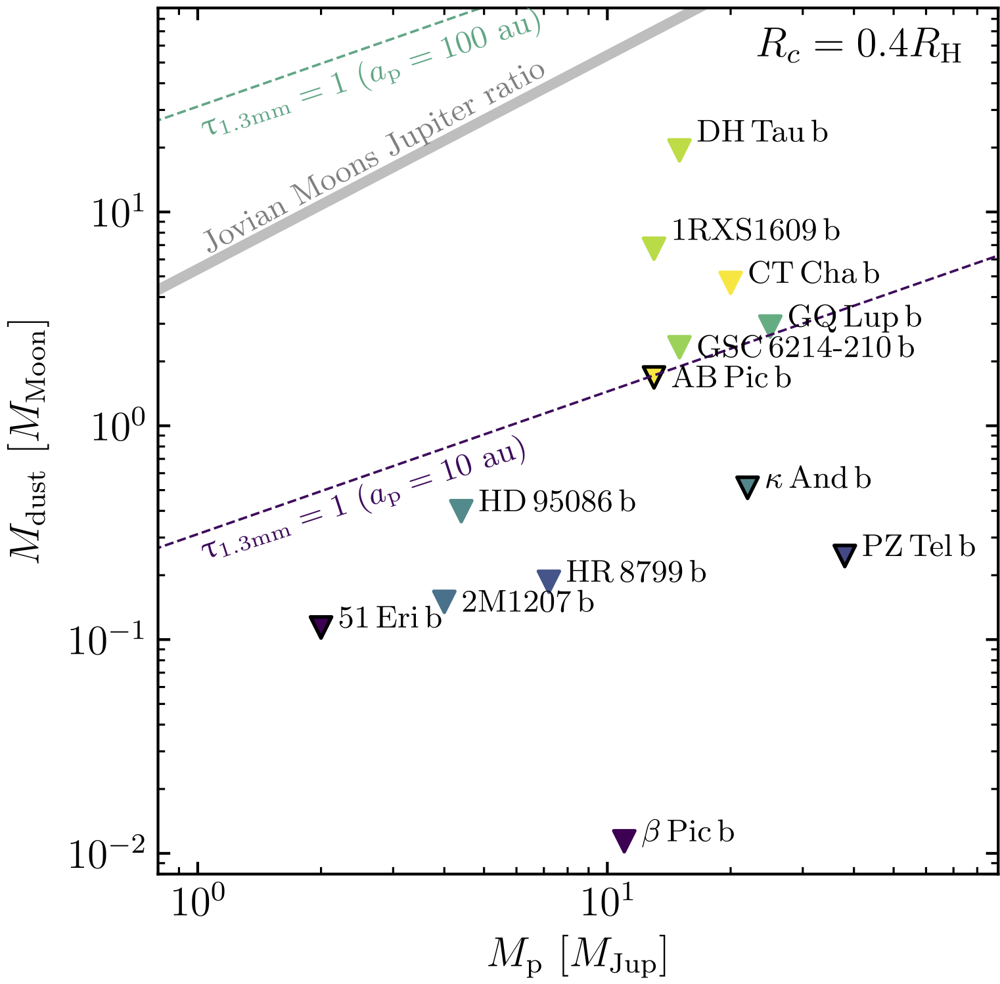
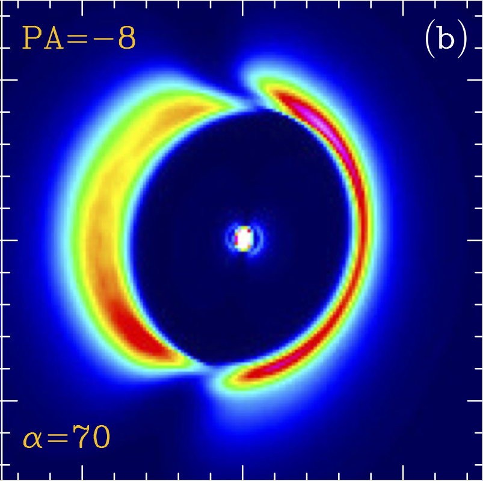
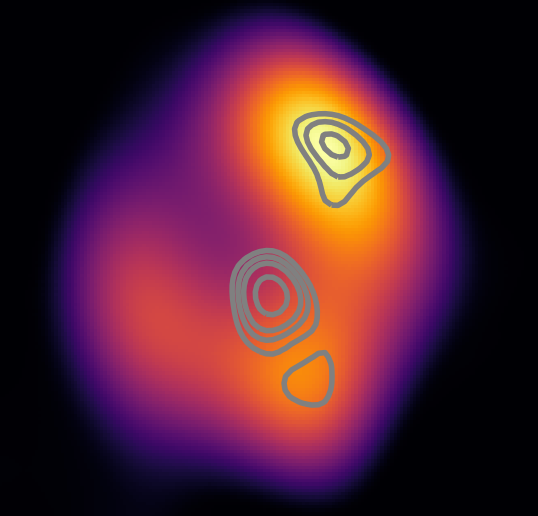

Planetary systems are born in clouds of gas and dust called protoplanetary discs. Within these clouds, particles must grow from micron-sized dust grains up to km-sized planetary seeds called planetesimals, in a race against the unavoidable disc dispersal. The newly formed planetesimals continue growing through collisions until their gravity is strong enough to efficiently accrete pebbles and smaller planetesimals to form planetary embryos or even the core of future giant planets. While planets grow, its birth disc is not static but rather in continuous evolution, dispersing and losing mass as gas and dust spiral in and fall onto the star. This mass loss finally halts planet growth after a few Myr—although planetary embryos might still grow after disc dispersal by merging. Alternatively, if discs are massive enough gas giant planets could form directly from the fragmentation and gravitational collapse of the protoplanetary disc. However, only a small fraction of discs seems to have the conditions to trigger this type of planet formation.
Protolunar discs
Regular satellites are thought to form in circumplanetary discs (CPDs) that form around planets while these are growing, in an analogous process to planet formation around stars. Satellite formation may be a very natural process since in the Solar System alone we know of tens of regular satellites around the gas giants Jupiter and Saturn. However, the presence of satellites and their formation has not been observationally constrained around exoplanets. Despite the lack of direct constraints, some clues arise from the Solar System satellites and exoplanets. While the masses and number of satellites vary from planet to planets, their total mass seems to be ~0.01% of the mass of their central planet. The same is true for close-in rocky planets around low mass stars such as Trappist-1. Does the same relation apply to exomoons?.
In a fruitful collaboration with S. Perez, we used ALMA to search for dusty protolunar discs around young gas giant planets, in which satellites could form. While we did not detect dust emission in any of the surveyed systems, we were able to rule out the presence of dust at the required levels to form satellites with a total mass of 0.01% of their cental planet (see Figure on the left from Perez, Marino et al. 2019). This means that either dust grows quickly around these planets to form satellites and we just missed it, or satellite formation is rare in exoplanets.
Warps & Shadows
Protoplanetary discs have been generally considered flat, meaning that all the material orbits the star in a single orbital plane. This is justified by the almost identical orbital plane of planets in the Solar System. However, nature surprises us every time we turn the corner. When 8m class telescopes started using their state of the art cameras to image protoplanetary discs, instead of seeing evenly illuminated discs by their central star what we saw were strange dark features in the outer regions. Those dark features were not due to the lack of a reflective surface, but rather evidence that stellar light was being blocked by something closer in. This is true for any disc where material close to the star in the inner disc blocks the light shadowing outer regions, however, the inner disc eclipses the stellar light only near the plane of the disc and in all directions. What Simon Casassus, Seba Perez and I realised was that the inner disc was tilted or warped, and thus casting two opposite shadows along the intersection lines where the planes of the inner and outer disc intersect (see figure on the left for a simulated image displaying two shadows from Marino et al. 2015a). Since then shadows have been shown to be common in large protoplanetary discs, and multiple theories have arisen trying to explain the origin of warps. Together with Simon Casassus and Seba Perez, we have continued investigating the thermodynamic and hydrodynamic consequences of the shadowing, which could affect planet formation.
Dust trapping
An important barrier that stops dust from growing beyond a few mm is their almost unavoidable radial drift that makes dust to spiral in and fall onto the star. This orbital decay is caused by a headwind felt by dust grains that arises from the slightly slower rotation of the gas. The slower gas rotation is caused by the pressure suport that the gas experiences when the densities decrease as a function of radius. A pathway to circumvent this is to have local pressure maxima in the disc where dust grains can get trap, accumulate and successfully grow to planetesimal sizes. Those pressure maxima can be in the form of annular and axisymmetric rings or asymmetric vortices. Using ALMA and VLA I showed that the protoplanetary disc around MWC758 has two vortices where planetesimal formation could be ongoing (see figure on the left that shows the ALMA image in colours and the VLA image superimposed in contours, Marino et al. 2015b).